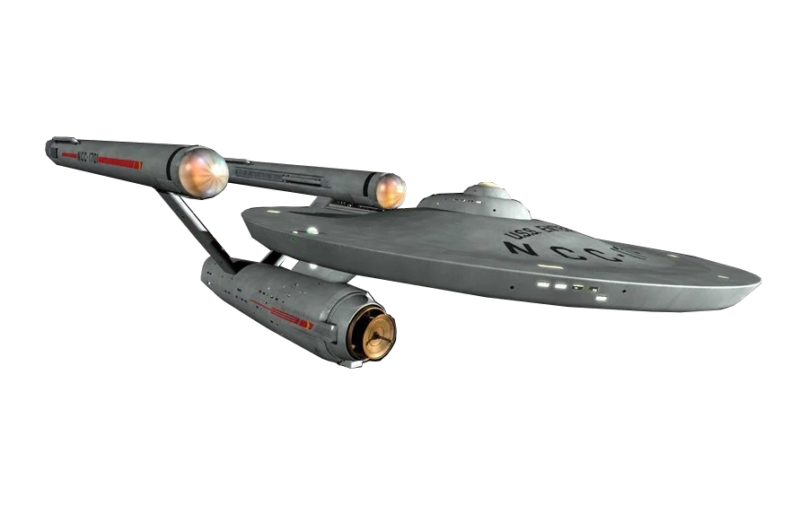

<app-nav-bar></app-nav-bar>
<main class="home-background">
  <h1 [@scrollState]="scrollState">star trek</h1>
  <h2 [@scrollState]="scrollState">universe</h2>
  <picture [@shipScrollControl]="shipScrollState">
    <source
      media="(max-width: 800px )"
      srcset="../../../assets/images/naveP.png"
    />
    
  </picture>
</main>
